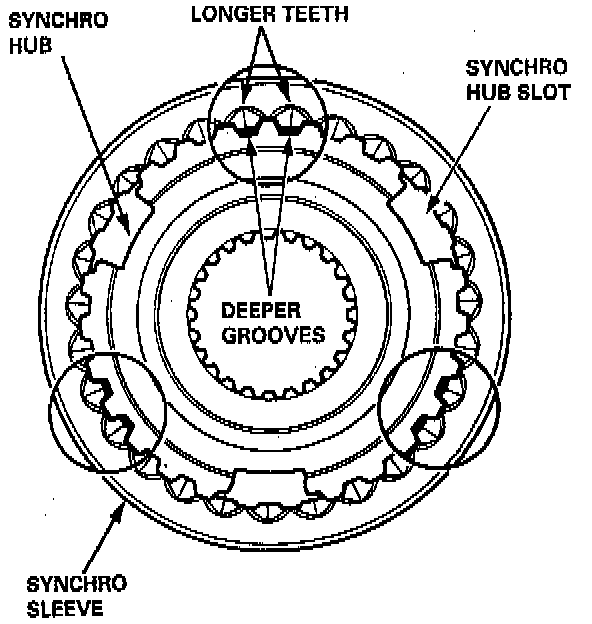

Synchronizer Hub: Service and Repair

INSTALLATION
When assembling the synchro sleeve and synchro hub, be sure to match the three sets of longer teeth (120 degrees apart) on the synchro sleeve with the three sets of deeper grooves in the synchro hub.
CAUTION: Do not install the synchro sleeve with its longer teeth in the synchro hub slots, because it will damage the spring ring.